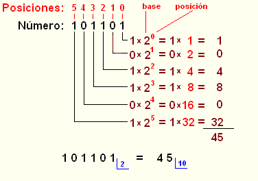

Capítulo 1
Conceptos básicos de informática
Santiago Higuera de Frutos
2014

This work is licensed under a Creative Commons Attribution 4.0 International License.
BIT
- La unidad de información elemental en un sistema informático es el bit
- Puede tomar dos valores: cero o uno
- Físicamente: paso de corriente o no, imantación o no, etc
Sistemas de numeración

Sistema binario

Sistema octal


Sistema hexadecimal


Esquema de un ordenador


Sistemas operativos para PC
| Microsoft Windows | Mac OS | Linux | Otros |
 |
Estructuras de directorios (I)
La organización de las unidades de almacenamiento (discos, usb,...) se hace mediante una estructura de arbol de nodos:
- Cada nodo puede ser carpeta (rama) o fichero (hoja)
- Los nodos de tipo 'carpeta' pueden contener otros nodos
- Existe un nodo raiz que es del tipo 'carpeta'
- Todos los nodos, excepto el raiz, tienen un único nodo 'padre', que es la carpeta dentro de la que se encuentran
Estructuras de directorios (II)
En Windows la función de directorio raiz la hace la letra de la unidad de disco, por ejemplo C o F. A esta letra se le añaden ':' y la barra invertida '\':
C:\En linux el directorio raiz se denota por la barra de dividir '/'. No existe el concepto de unidad
/Nombres de archivos y carpetas
Cada archivo o carpeta de un disco tiene un nombre, que no puede estar repetido dentro de la misma carpeta
Suelen acabar en un punto '.' seguido de la denominada extensión, que son unas letras que indican el tipo de fichero del que se trata.
MiFichero.txtWindows no hace distinción de mayúscula o minúsculas en los nombres de ficheros, linux sí
Ruta (path)
Cada archivo o carpeta se puede referenciar mediante su 'ruta' o 'path'. Cada ruta consta de la lista de carpetas desde la carpeta raiz hasta la del fichero, más el nombre del propio fichero:
C:\Documents\MiFichero.txtLos nombres de las distintas carpetas de la ruta se separan con la barra invertida '\' en windows y con la barra de dividir '/' en linux
/users/shiguera/MiFichero.txtLa consola o terminal

Funciona en modo petición-respuesta: Tecleamos algo y al pulsar INTRO el ordenador procesa el comando y muestra el resultado
Suele mostrar en el prompt la ruta actual de la carpeta en la que nos encontramos
Para moverse entre los distintos directorios o carpetas se utiliza el comando CD, 'Change Directory'.
cd C:\Users\shigueraInstalación de Octave-UPM
 http://mat.caminos.upm.es/octave/
http://mat.caminos.upm.es/octave/
Octave UPM GUI

Instalación de Octave 3.8

La nueva versión de Octave tiene algunas mejoras respecto de la utilizada en Octave UPM.
La versión para windows se puede descargar desde la dirección:
http://mxeoctave.osuv.de/
Es interesante la versión portable, que se puede copiar en un USB y ejecutar directamente, no requiere instalación
El directorio doc de Octave
Contiene documentación de Octave en formato pdf y en formato html
En la versión 3.8 portable se encuentra en la ruta share\doc\octave y en la versión UPM está en la ruta doc\octave
En la versión UPM hay un documento refcard-a4.pdf que es una chuleta de Octave interesante
El directorio bin de Octave

En el directorio 'bin' de la instalación de Octave es donde se encuentran los programas que se ejecutan:
- octave.exe: Arranca la consola de Octave (Salir: exit)
- octave-gui.exe: Arranca el interface gráfico de Octave
- gnuplot.exe: Arranca la consola de GNUPlot (Salir: exit)
- octave-upm.exe: Arranca Octave UPM (versión UPM)
Cambiar el path
Cuando ejecutamos un comando en la consola, el sistema operativo busca el comando en el directorio actual y en todos los directorios que figuren en la variable 'path' del sistema
Para ejecutar un programa que esté situado en un directorio determinado y evitar tener que teclear toda la ruta del programa, se añade el directorio del programa a la variable 'path' del sistema.
Hay que añadir la ruta del directorio 'bin' de la instalación de Octave a la variable path
Se puede consultar la siguiente página:
http://furniman.blogspot.com.es/2012/02/anadir-un-directorio-al-path-del.html
Arrancar Octave
- Desde el explorador de ficheros: Hay que abrir el directorio bin de la instalación de Octave y ejecutar el programa octave.exe [1]
- Desde la consola: Situados en el directorio bin de Octave teclearemos 'octave' y la tecla intro [2]
- [1] el explorador de archivos de windows suele tener activada una opción que oculta la extensión de los archivos en los listados. Conviene desactivar esta opción. Se puede consultar: Mostrar u ocultar extensiones de nombre de archivo
- [2] Si hemos añadido el directorio 'bin' de Octave al 'path' del sistema, podremos arrancar tecleando 'octave' desde cualquier directorio.
Octave GUI
GUI es el acrónimo de Grafic User Interface, Interface Gráfico de Usuario. Se refiere al interface de ventanas a través del que se interactúa con los progrramas
Las últimas versiones de Octave incorporan un Interface Gráfico de Usuario, todavía en fase experimental.
Para forzar el arranque de Octave a través del GUI podemos teclear desde la consola:
octave --force-guiTambién podemos ejecutar el programa octave-gui.exe
Nota: Estas últimas opciones no funcionan en la versión Octave UPM
Octave GUI

Editores Vs Procesadores
Para escribir el código de los programas se utilizan editores de texto. Los procesadores de texto del tipo de word, libre office u otros no sirven, pues insertan caracteres especiales
Los editores de texto ofrecen ayudas a la escritura de programas, por ejemplo resaltado de sintáxis, corrección de bugs, formateado de código y otras
 |
 |
 |
Octave Editor
Octave incorpora Notepad++ como editor. Para editar un fichero mifichero.m, desde la consola de Octave teclearemos:
edit mifichero.mSe abrirá la ventana de edición de Notepad++.
Nota: Podemos utilizar el Notepad++ desde fuera de Octave. El programa se encuentra en la carpeta 'notepad++' de la instalación de Octave. El fichero ejecutable que arranca el Notepad++ es notepad++.exe
Octave Android
La versión de Octave para Android desarrollada por Corbin Champion funciona bien en tablets y smartphones.
No tiene GUI, ofrece la consola de Octave. Sí tiene gráficos
Hay que descargarse tres paquetes desde la Google play:
- Octave Main Package
- Octave Gnuplot Package
- Octave

Gracias por su atención
Santiago Higuera de Frutos
@santiagohigueraEl código fuente de la presentación se puede consultar en Github: